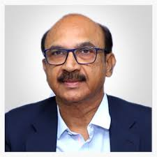

Prof. (Dr.) Kotha Madhu Murthy assumed charge as Chancellor (FAC) on 18.04.2025. An accomplished academician and administrator, he is currently serving as the Chairman of the Andhra Pradesh State Council of Higher Education (APSCHE). With over 37 years of experience in Mechanical Engineering and Entrepreneurship, he has made significant contributions to higher education policy, research, and institutional development.
Prior to his current role, Prof. Murthy was a Professor (HAG) in the Department of Mechanical Engineering at the National Institute of Technology, Warangal (NITW), where he also served as a Member of the Board of Governors . His leadership roles at NITW included Dean (Faculty Welfare), Head of the Mechanical Engineering Department, and Registrar (Additional Charge). He also held the position of Registrar at NIT Delhi.
Rajiv Gandhi University of Knowledge Technologies (RGUKT) is a technical university established by the Government of Andhra Pradesh through Act No.18 in 2008 at three locations: Nuzvid (Krishna District), RK Valley (Kadapa District) , and Basara (Adilabad District). However, following the bifurcation of the erstwhile state of Andhra Pradesh into Andhra Pradesh and Telangana in 2014, the campuses were divided between the two states—Nuzvid and RK Valley remained with Andhra Pradesh. To extend quality education to more students, the Andhra Pradesh government established two additional campuses in Ongole and Srikakulam in 2016.
To transform rural youth into global leaders and innovators in science, technology, and multidisciplinary areas and contribute to the maximization of the welfare of humanity To provide quality technical education with the goal of inclusiveness in terms of access to the meritorious rural youth, who are perennially deprived of opportunities through an innovative blend of modern computer-assisted, learner-centric instructional methodology along with rigorous traditional teaching in a world-class ambience.